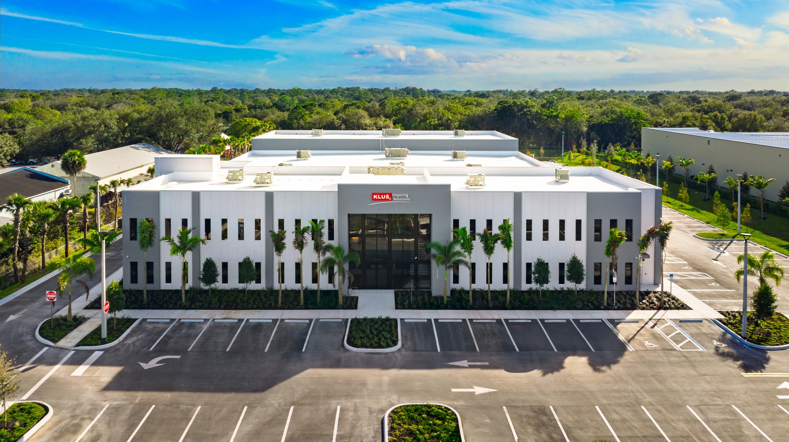

Safety glazing in commercial construction is governed by two parallel standards, enforced by Florida Building Code and International Building Code Section 2406, and tied to OSHA requirements for the installation process itself. A glass selection that is code-compliant on paper can still fail in the field if the permanent marking is missing, if Category I glass was used where Category II was required, or if hazardous-location rules were applied without checking every wet room, door sidelight, and railing in the building. This article walks through ANSI Z97.1, CPSC 16 CFR Part 1201, IBC and FBC 2406 hazardous locations, tempered versus laminated safety glazing, and OSHA safety during installation.

The Two Core Standards: ANSI Z97.1 and CPSC 16 CFR 1201
Safety glazing in the United States is tested and labeled to one of two standards. ANSI Z97.1 is the American National Standards Institute standard for safety glazing materials used in buildings, maintained by the Safety Glazing Certification Council. CPSC 16 CFR Part 1201 is the Consumer Product Safety Commission federal regulation for architectural glazing materials. The two standards test the same thing (impact resistance from a 100-pound shot bag) and define safety performance similarly, but CPSC 1201 is federal law for certain architectural glazing applications while ANSI Z97.1 is a voluntary industry standard.
CPSC 1201 defines two categories based on impact height:
- Category I: impact tested from 18 inches, generally limited to glass in sidelights less than 9 square feet in area or in locations outside the primary hazardous zones
- Category II: impact tested from 48 inches, required for glass in doors, glass in locations subject to human impact, and most glazing above 9 square feet in hazardous locations
Commercial glazing in Florida generally defaults to Category II because the hazardous locations defined by IBC 2406 and FBC 2406 (doors, adjacent sidelights, low glazing, wet areas, stair and ramp glazing) all require the higher-rated category on any pane larger than 9 square feet.
Tempered vs Laminated Safety Glazing
Two glass product types meet the safety glazing impact requirements: tempered glass and laminated glass. Each has different failure characteristics, different cost profiles, and different compatibility with other code requirements.
Tempered Glass
Tempered glass is heat-treated to approximately 4 to 5 times the strength of annealed glass. On impact failure, tempered breaks into small cube-like fragments that reduce laceration risk. Tempered is widely used in commercial doors, shower enclosures, railings, and low-height sidelights. It is the most cost-efficient path to safety glazing on interior commercial applications. Tempered carries a permanent mark, typically acid-etched or sandblasted, in one corner identifying the fabricator and the standard (Z97.1 or CPSC 1201 CAT II).
Laminated Glass
Laminated glass bonds two or more glass lites with a polymer interlayer (PVB, SentryGlas ionoplast, or EVA). On impact failure, the glass breaks but the interlayer retains the fragments, keeping the opening closed. Laminated is specified in commercial work where the safety glazing also needs to provide security, acoustic performance, impact-rated hurricane performance, or fall protection on elevated applications.
When to Use Which
| Application | Typical Choice | Reason |
|---|---|---|
| Interior office doors and sidelights | Tempered | Cost-effective, meets Category II |
| Exterior storefront doors and glazing in HVHZ | Laminated (impact-rated) | Required for hurricane compliance |
| Shower enclosures and wet areas | Tempered | Standard commercial practice |
| Railings and guards | Tempered-laminated or heat-strengthened laminated | Fall protection, post-breakage retention |
| Storefront below 60 inches | Tempered or laminated | Must meet hazardous-location rule |
| Overhead and sloped glazing | Laminated or tempered-laminated | Prevents falling glass on failure |
| School and daycare occupancies | Laminated | Specifier preference for fragment retention |
Hazardous Locations per IBC 2406
IBC and FBC Section 2406 define the specific locations where safety glazing is required. The enforcement rule is straightforward: if a pane of glass is in a hazardous location as defined, it must be Category II safety glazing (or Category I for panes 9 square feet or smaller in limited conditions). The hazardous locations are:
- Glazing in all fixed and operable panels of swinging, sliding, and bifold doors
- Glazing in an individual fixed or operable panel adjacent to a door where the bottom edge is less than 60 inches above the floor and within 24 inches of the door edge
- Glazing in an individual fixed or operable panel that meets all the following: larger than 9 square feet, bottom edge less than 18 inches above the floor, top edge more than 36 inches above the floor, and one or more walking surfaces within 36 inches horizontally
- Glazing in guards and railings, whether or not the railing itself is structural
- Glazing in walls and fences enclosing swimming pools, hot tubs, and spas where the bottom edge is less than 60 inches above the walking surface and within 60 inches horizontally of the water
- Glazing adjacent to stairways, landings, and ramps within 36 inches horizontally where the bottom edge of glazing is less than 60 inches above the walking surface
- Glazing in wet areas, including shower enclosures and glazing within 60 inches of a bathtub or shower threshold
On commercial construction, the common field findings are adjacent-to-door sidelights installed with annealed glass (hazardous location #2 missed) and wet-area glazing near commercial bathrooms or gym showers that was not flagged on the plans. Both are costly to catch after installation because the glass has to be removed and replaced.
How Florida Building Code Enforces Safety Glazing
Florida Building Code Chapter 24 incorporates IBC 2406 hazardous-location rules directly, and additionally layers in the HVHZ impact glazing requirements that dominate Miami-Dade, Broward, and coastal county construction. On HVHZ projects, the safety glazing category is usually solved automatically by the impact-rated laminated assembly, because impact-rated laminates meet Category II by construction. On non-HVHZ interior applications, tempered glass remains the workhorse for safety compliance.
Permanent marking enforcement is rigorous in Florida. Building inspectors on commercial projects routinely check for the permanent etch on every tempered or laminated pane in a hazardous location. A pane that is in fact tempered but has no visible mark fails inspection and has to be replaced or marked (and field marking of tempered glass is not allowed; the mark must be from the fabricator). See Florida Building Code commercial glazing guide for more.
Safety Glazing in Impact-Rated Assemblies
Impact-rated hurricane glazing for HVHZ and other high-wind applications is laminated glass tested to ASTM E1886/E1996 large and small missile impact standards. Every impact-rated laminated assembly with a current Miami-Dade NOA or Florida Product Approval (FL) automatically satisfies CPSC Category II safety glazing. Specifiers do not need to call out safety glazing separately for impact-rated assemblies; the impact rating includes it. See our impact-rated glass requirements overview for more.
OSHA Site Safety During Glazing Installation
The other half of safety glazing is the installation process itself. OSHA 29 CFR 1926 Subpart M (Fall Protection) and Subpart L (Scaffolding) govern glazing installation on commercial construction sites.
Fall Protection Above 6 Feet
Glazing work above 6 feet requires one of three protection methods: guardrail systems, safety nets, or personal fall arrest systems. On curtain wall, window wall, and storefront work on multi-story buildings, personal fall arrest systems with compatible anchors are standard. Scissor lifts and boom lifts, commonly used for high glazing work, require tied-off occupants with the lift platform as the anchor.
Glass Handling
Large glass lites (anything over roughly 50 pounds or awkward to handle) require mechanical handling with suction cups on a lifting frame or a vacuum hoist. The OSHA lifting-without-mechanical-aid standard limits how much a single worker can lift, and commercial glass quickly exceeds that limit. ACG's field crews use vacuum lifters, mechanical handlers, and two-person or crew lifts depending on the glass size.
Cut and Laceration Prevention
Handling glass edges, even on finished lites, produces lacerations if gloves and handling technique are not enforced. Cut-resistant gloves, leg guards, and steel-toed boots are standard on glazing crews. Broken glass cleanup on site uses scoops, not hands, and broken glass is disposed in sealed containers.
Pre-Installation Safety Glazing Checklist
- Every door has Category II safety glazing specified, permanent mark required
- Every sidelight within 24 inches of a door edge and with a bottom edge under 60 inches is safety glazed
- Every wet-area glazing application is safety glazed
- Guards, railings, and overhead glazing meet the specific product requirements
- Impact-rated HVHZ assemblies carry current NOA or Florida Product Approval
- Installer fall protection plan in place before glass arrives on site
- Glass handling plan (lifters, crew size) matches the lite sizes on the submittal
Safety-First Glazing on Your Project
ACG reviews safety glazing compliance against IBC 2406 and FBC during shop drawings on every commercial project, catching hazardous-location issues before the order goes to fabrication. On HVHZ and high-wind projects, our submittals carry the NOA and Florida Product Approval documentation that auditors and inspectors will ask for. Call (772) 486-7711 or send plans to contact for a compliant, safety-first scope. CGC1531993, OSHA 30 trained field crews, delivering commercial glazing across Florida since 2021.